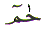
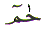
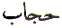
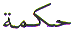

The Arabic letter
Ha ( ) is almost equivalent to the letter ‘H'
in the English alphabet. It is the sixth letter in the Arabic
character set. Ha in Arabic numerology which is known as Abjad,
has the value of 8. This article is about the spiritual meaning
of the letter Ha.
) is almost equivalent to the letter ‘H'
in the English alphabet. It is the sixth letter in the Arabic
character set. Ha in Arabic numerology which is known as Abjad,
has the value of 8. This article is about the spiritual meaning
of the letter Ha.
The letter Ha
( ) along with the letter Meem (
) along with the letter Meem ( ) is used as the
opening letter of 7 chapters in the Quran as .
The letter Ha is also the 11th and 17th letter in the verse Bismillah
(shown at the top of this page). The letter Ha is for Hamd (Praise) and All
Hamd is for Allah The Rabb (Lord) of
the Worlds. These are the opening words of chapter 1 in the Quran.
They are the most repeated words. In other words All Praise is
for Allah... (chapter 1) is repeated in every Rakah of prayer
and in everyday conversation among Muslims.
) is used as the
opening letter of 7 chapters in the Quran as .
The letter Ha is also the 11th and 17th letter in the verse Bismillah
(shown at the top of this page). The letter Ha is for Hamd (Praise) and All
Hamd is for Allah The Rabb (Lord) of
the Worlds. These are the opening words of chapter 1 in the Quran.
They are the most repeated words. In other words All Praise is
for Allah... (chapter 1) is repeated in every Rakah of prayer
and in everyday conversation among Muslims.
The letter Ha is one of the letters of Muqattaat. That is, it is used in the opening verses of certain chapters in the Quran. The word Harf meaning letter also starts with the letter Ha. It is the Huroof (letters) that make the words. No book can be written without words. Words are made by arranging the letters in a certain way, so that they make up words that are intelligent. Sentences are formed by arranging the words in a certain way. No words or sentences can be written without letters. Anyone can make up a sentence, in Arabic, for example. But that sentence will not have any ‘power' or ‘force' to attract the angels. In the Quran the Arabic letters are arranged in such a way that they bring the Power of Allah into action. If we look at the position of the two letters Ha in the verse Bismillah, they are placed in positions 11 and 17. Why?
It is because Ha when used to represent Huroof (letters), it shows us that there are 28 Huroof (11 + 17, letters) in the Arabic script. What is the significance of the Harf (letter)?
The chapter (17 = 1 =
7 = 8) and verse numbers (88) hint at the letter Ha
( = 8). It is the arrangement of
the Arabic letters that are recognised by the angels who come
to assist mankind when Allah Wills. Hence the whole of mankind
and jinn together, cannot ever produce anything remotely similar
to the verses of the Quran. Whatever they (mankind and jinn together)
produce will not have the ‘force' or the ‘power' of
the Quran. Angels will not recognise the forgery as they recognise
the Word of Allah. The arrangement and order of the Arabic letters
in the Quran is very important. That is why the Quran must be
recited in Arabic. By reciting the Quran or doing Zikr Allah, we are engaged in the Hamd
(praise) of Allah. What is
Hamd?
= 8). It is the arrangement of
the Arabic letters that are recognised by the angels who come
to assist mankind when Allah Wills. Hence the whole of mankind
and jinn together, cannot ever produce anything remotely similar
to the verses of the Quran. Whatever they (mankind and jinn together)
produce will not have the ‘force' or the ‘power' of
the Quran. Angels will not recognise the forgery as they recognise
the Word of Allah. The arrangement and order of the Arabic letters
in the Quran is very important. That is why the Quran must be
recited in Arabic. By reciting the Quran or doing Zikr Allah, we are engaged in the Hamd
(praise) of Allah. What is
Hamd?
Hamd is saying Praise to Allah. Hamd is remembering Allah. The way to remember Allah is to call Him often by any, or some, or all of His Names mentioned in the Quran. Almost everyone will say there are 99 Names of Allah mentioned in the Quran. In fact there are more than 99 Names. These 99 Names are referred to as Al Asma ul Husna - The Most Beautiful Names.
Why are there so many Names of Allah when Allah is One? The proper Name of our Creator is Allah. The other ‘Names' are His Attributes. Each Ism (‘Name') of Allah has a different Quality. Each Ism (Name) is made up of different combinations of the Huroof (Arabic letters). Each Harf (letter) has its own quality. Each letter has its own angel assigned by Allah. Each angel has rows and rows of angels under its command. All these angels come under the command of the angel who is assigned to a particular Ism (Name) of Allah. Each and every Ism (Name) has Its own Goodness.
If we look at all the
99 Asma ul Husna,
we find that there is a Name of Allah in Arabic which starts with
every Harf (letter) of the Arabic letter except
for the five letters  - Dal,
- Dal,  - Za,
- Za,  - Toin,
- Toin,  - Ya and
- Ya and
 - Sa (or
Tha?). That is 23 out of 28 Arabic letters are used as the initial
letter of the 99 Asma
ul Husna. Or to put it another way 5 out
of 28 Arabic letters are not used as the initial letter of the
99 Asma ul Husna.
Insha Allah, the above five letters will be looked at in there
own separate books. If we look, we will find even more than 99
Names of Allah in the Quran which are not included in the Asma ul Husna. For
- Sa (or
Tha?). That is 23 out of 28 Arabic letters are used as the initial
letter of the 99 Asma
ul Husna. Or to put it another way 5 out
of 28 Arabic letters are not used as the initial letter of the
99 Asma ul Husna.
Insha Allah, the above five letters will be looked at in there
own separate books. If we look, we will find even more than 99
Names of Allah in the Quran which are not included in the Asma ul Husna. For
 - Dal we
have the Name Daiem -
- Dal we
have the Name Daiem - 


 .
For
.
For  - Za we
have the Name Zakkee -
- Za we
have the Name Zakkee - 

 and the Names Yubdee
and the Names Yubdee


 and
Yueed
and
Yueed 


 for
for  - Ya. Now
we have 26 out of 28 letters which are used as the initial letter
in the Name of Allah. The two letters that are not used are
- Ya. Now
we have 26 out of 28 letters which are used as the initial letter
in the Name of Allah. The two letters that are not used are  - Toin and
- Toin and  - Sa (or Tha?). If we look at the number of Arabic letters
used as the initial letter for the Names of Allah we have 26 which
is 2 + 6 = 8 =
- Sa (or Tha?). If we look at the number of Arabic letters
used as the initial letter for the Names of Allah we have 26 which
is 2 + 6 = 8 =  for Hamd.
for Hamd.
Each Name of Allah has Its own Blessing and Goodness. Each particular Name of Allah is ideal for overcoming a particular hardship or difficulty. If we mention all the Names of Allah, everyday, then there is no problem so great that cannot be overcome by Allah's Permission.
There are as many different reasons for Praising Allah as the number of people Praising Him. They can all be categorised in the following three groups. Hamd is Praise for Allah just for the sake of Allah and no other reason. Hamd is Praise for Allah for the sake of seeking guidance. Hamd is Praise for Allah for seeking a favour. And, Hamd is the same Praise and yet for so many reasons. Therefore the basis of Hamd is intention. Al Hamdu Lillah most Muslims Praise Allah most of the time just for the sake of praising Him and for no other reason. Praising of Allah has become a habit with them. And when they neglect their prayers and praise, they feel that something is missing from their lives. They feel lost and ashamed before Allah. This is the mark of a good Muslim. There is another side to Hamd. When we Praise Allah, He assigns angels to assist His servant. These angels are the ones that recognise that particular Name of Allah.
The way to Praise Allah is to select one or two or more of His Names and repeat them over and over again. The decision as to which Name is chosen by an individual is based on the Name of Allah that attracts the individual the most. That particular Name of Allah becomes Ism Azam (Greatest Name of Allah) for that particular individual. By calling Allah with one's personal Ism Azam, Allah fulfils the prayers of His servant.
Verse 110 + chapter 17
= 127 = 12 + 7 = 19 = 1 + 9 = 10 = 1 + 0 = 1.
Or 110+17 = 127 = 1 + 27 = 28 = 2 + 8 = 10 = 1 + 0
= 1.
Verse 8 + chapter 20
= 28 (letters) = 2 + 8 = 10 = 1 + 0 = 1.
Whichever way we look at it, to reach the One we need to concentrate
on the letters in the Quran and their combinations. The above
two references from the Quran, each equates to 28, one way or
another. There are two more references in the Quran of Asma ul Husna which are included here which do not equate to
28:
Verse 180 + chapter 7 = 187 = 1 + 7 + 8 = 16 = 1 + 6 = 7.
Verse 24 + chapter
59 = 83 = 8 + 3 = 11 = 1 + 1 = 2.
Why do the above two verses not equate to 28 or 1? We have to
find an answer to that. Husna is the operative word here. We
shall come back to the 7 and 2 from the above results further
along in this book.
Hijaab is another word that starts with
the letter Ha  . Hijaab is the veil
. Hijaab is the veil  between
Allah
between
Allah and the creation
and the creation  .
Hijaab is a veil that can be removed if
Allah Wills. We can realise Allah through His Works or Signs:
.
Hijaab is a veil that can be removed if
Allah Wills. We can realise Allah through His Works or Signs:
To remove the Hijaab we have to emulate Allah's Qualities or Attributes of Hearing and Seeing as we are told in the above verse We might show him some of Our Signs: for He is the one Who hears and sees. ‘Seeing' in this context does not mean just seeing with the physical eye. It also means reason, intelligence and logic. If we listen carefully and try to ‘see' the reality of the things as they are, then the Hijaab (veil) gets lifted, if Allah Wills. The reality of things becomes plain to ‘see', or to understand.
The greatest Hijaab (veil) between the spiritual meaning and the literal
meaning of the Quran are the Huroof (Arabic letters). Yet the letters
in the Quran are manifest. Al Baqara (Quran: chapter 2) starts
with the letters Alif, Laam and
Meem  . We look at these
letters, and yet we do not see them. We overlook these letters
every time. We read these letters, and yet we do not listen to
them. We hear these letters, and yet we do not understand them.
The veil on the spiritual meaning of the Quran is not deliberate.
The letters are placed right in front of us at the start of the
chapters so that we do not have difficulty in finding them. Yet,
we quickly read them without pausing to think ‘why?'. It
is human nature to overlook the obvious. If we try to see the
words in the Quran letter by letter, then the words that are not
clearly understood, start to reveal their meanings by Allah's
Permission. The following are references from the Quran about
the Message of the Quran and Hijaab:
. We look at these
letters, and yet we do not see them. We overlook these letters
every time. We read these letters, and yet we do not listen to
them. We hear these letters, and yet we do not understand them.
The veil on the spiritual meaning of the Quran is not deliberate.
The letters are placed right in front of us at the start of the
chapters so that we do not have difficulty in finding them. Yet,
we quickly read them without pausing to think ‘why?'. It
is human nature to overlook the obvious. If we try to see the
words in the Quran letter by letter, then the words that are not
clearly understood, start to reveal their meanings by Allah's
Permission. The following are references from the Quran about
the Message of the Quran and Hijaab:
Hikmat  means
wisdom. Hikmat also starts with the letter Ha
 . The word Hikmat
is mentioned 19 times in the Quran. Almost every time, the Book
(Scriptures) is mentioned, the word Hikmat
is used alongside. What is Hikmat or wisdom? Wisdom is learning.
The learning process starts from the day we are born. Learning
is a continuous process to which there is no end. Wisdom comes
from learning. Wisdom is knowledge. Knowledge has many branches.
We seek knowledge from an early age. Wisdom is discernment. We
can only discern or distinguish if we have a knowledge base. The
Quran is full wisdom. We must learn wisdom from the wise Quran.
. The word Hikmat
is mentioned 19 times in the Quran. Almost every time, the Book
(Scriptures) is mentioned, the word Hikmat
is used alongside. What is Hikmat or wisdom? Wisdom is learning.
The learning process starts from the day we are born. Learning
is a continuous process to which there is no end. Wisdom comes
from learning. Wisdom is knowledge. Knowledge has many branches.
We seek knowledge from an early age. Wisdom is discernment. We
can only discern or distinguish if we have a knowledge base. The
Quran is full wisdom. We must learn wisdom from the wise Quran.
What is the basis of wisdom in any book? The words. The words can only be formed if there is a character set. The Arabic character set is the basis of the Quran. It is the letters which are the roots of the wisdom.
There are seven chapters in the Quran which start with the letters Ha Meem. They are chapters 40 to 46 inclusive. The opening verses are shown here:
Let us try and analyse the above verses. In chapters 40 and 41, the second verses end in Meem. In chapter 42 we cannot derive much information from verse 2 (Ayn Seen Qaf) so we should look at the next verse, which is 3. That too ends in Meem.
Chapters 43 and 44, second
verses end in Noon . Noon is connected with Noor
(Light) of Allah. Allah is telling us in both these chapters,
in the second verses By the Book that makes things clear. Just
in case we missed it in chapter 43, the verse is repeated in chapter
44 to highlight it. How are things made clear in a book?
. Noon is connected with Noor
(Light) of Allah. Allah is telling us in both these chapters,
in the second verses By the Book that makes things clear. Just
in case we missed it in chapter 43, the verse is repeated in chapter
44 to highlight it. How are things made clear in a book?
Books are made up of words. Words are made up of letters. The things being clarified to us are the letters, in this case Ha and Meem, which preceded the verse which points to clarification. Finally, in chapters 45 and 46, the second verses again end in Meem. Not only that, but Allah's attribute Al Hakeem (The Wise) is used as the last word. The Attribute Hakeem starts with Ha and ends with Meem. Just to emphasise the opening letters, the verse is repeated in the last two chapters (45 & 46) out of the seven chapters. The attribute Al Hakeem was also the last word in verse 3 chapter 42. It is clear. Nothing has been hidden.
In total, we have three out of seven chapters emphasising the Attribute Al Hakeem. We have five out of seven chapters where the ‘non-lettered' verses end in Meem. All the above chapters are placed consecutively in the Quran. The first one is placed in the 40th position. That is the clue. Allah is telling us that the clue is in the letter Meem which has a numerical value of 40. If that is not enough, Chapter 40 is named Mu_min. What is the connection?
There are 7 chapters
starting with the letters Ha
Meem. From what has
been covered above, the initial emphasis is on Meem.
If we find the total sum of the 7 Meems
we get 7 x 40 = 280. We could look at the result as a magnification
of the 28 Huroof ( - letters)
by a factor of 10 (28 x 10 = 280). Or we could look at it from a
different angle and see that Allah is telling the created (‘0')
to understand the 28
Huroof.
- letters)
by a factor of 10 (28 x 10 = 280). Or we could look at it from a
different angle and see that Allah is telling the created (‘0')
to understand the 28
Huroof.
If that is not obvious,
then convert the number ‘280' into letters of the value 200 =  (Ra) and
80 =
(Ra) and
80 =  (Fa). Add
them to the initial letter Ha (
(Fa). Add
them to the initial letter Ha ( ) and
we have the word - Harf meaning letter. We are again being reminded that
the spiritual Message is in the letters of the Quran. Alif Laam Meem. That Book in which
there is no doubt.
Allah is Speaking to
us through the Quran with the 28 letters. The Quran contains the
Speech of Allah.
) and
we have the word - Harf meaning letter. We are again being reminded that
the spiritual Message is in the letters of the Quran. Alif Laam Meem. That Book in which
there is no doubt.
Allah is Speaking to
us through the Quran with the 28 letters. The Quran contains the
Speech of Allah.
Why are there only 7 chapters with the opening letters Ha Meem? It does not tie up with the numerical value of 8 for the letter Ha. Should there be 8 chapters with the letters Ha Meem in order to equate with the numerical value of the letter Ha?
The simple answer is
no. Had there been an 8th chapter with the opening letters Ha Meem then the emphasis would not have been on Huroof. We would
not arrive at the solution in the section The Ha Meem
Connection. Because 8 x 40 (Meem) would have given us 320. The 320
would not have connected with the letters. In order to solve this
problem of the missing letter Ha, we need to solve another problem
first. To put it another way, we need to solve one problem and
use the answer we get to arrive at the solution to the second
problem.
It was stated earlier in this book, that everyone thinks there are 99 Names or Attributes belonging to Allah. In reality, there are more than 150 Attributes of Allah mentioned in the Quran. The reason for thinking there are 99 names is the following Hadees:
Where does the number
99 come from? What was Allah's Messenger  trying to tell us? Could the number 99 have come from the letters
Ha Meem since Muhammad
trying to tell us? Could the number 99 have come from the letters
Ha Meem since Muhammad  did the most Hamd of Allah?
did the most Hamd of Allah?
If we add the numerical
values of the above two letters we get:
( =) 8 + (
=) 8 + ( =)
40 = 48. That is not the answer.
=)
40 = 48. That is not the answer.
However, if we write the letters as we pronounce them when reciting the Quran we have:
HA ( = 
 ) and MEEM ( =
) and MEEM ( = 

 ). If we add the
numerical value of these letters now we get:
). If we add the
numerical value of these letters now we get:
( =
1) + (
=
1) + ( = 8) + (
= 8) + ( =
40) + (
=
40) + ( = 10) + (
= 10) + ( =
40) = 99.
=
40) = 99.
Coming back to the question of the ‘missing' eighth letter Ha. In the references to the Asma ul Husna in the Quran (in the section by the same name in this book), the last two quotations were the clues to finding the missing letters.
Verse 180 + chapter 7 = 187 = 1+ 7 + 8 = 16 = 1 + 6 = 7.
The above tells us that
there are 7 letters Ha used in the opening verses of 7
chapters.
The next reference:
Verse 24 + chapter 59 = 83 = 8 + 3 = 11 = 1 + 1 = 2.
This reference tells us that there are two more letters Ha which are separate. Why are there two more? That is because we have to find the letter Ha as it sounds when reciting. The letter itself is not Hamd. Only with recitation is there Hamd. Keeping the Quran in the house is not Hamd. Only by opening the Quran and reading it, are we engaged in Hamd.
Therefore we are being
told that the missing letters can only be found by reading the
letter Ha. So we read the letter and we make
the sound HA 
 we get the number (8 + 1 ) = 9. This is the
total number of the letters Ha that we must find.
we get the number (8 + 1 ) = 9. This is the
total number of the letters Ha that we must find.
Now, where are the missing two letters Ha? Right in front of our eyes. The second occurrence of Ha Meem in the Quran chapter 41 verse 2 shows us where to look. Or, to say it in another way, we are being told in the above two references to look at the second (2) of the 7 chapters starting with Ha Meem to find the missing two letters Ha.
Notice the name of the chapter is also Ha Meem just in case we did not think of looking at the Asma ul Husna connection. The two missing letters Ha are in the words RaHman (Most Gracious) and RaHeem in the above verse. Where have we seen these two Names of Allah before? In the verse Bismillah Hir Rahman Nir Raheem. The Opening verse of the Quran. Where there is Hamd, there will be angels present. Where there is Hamd there will be Allah's Rahmat (Mercy). And Hamd begins with Bismillah Hir Rahman Nir Raheem.
Allah is Al Hayy, the Living One. He created us out of dust and gave us life by breathing into us His life giving Breath. We should be thankful for that. We should say Allah's Praise. Some readers may say that they had no choice in the matter and would rather not have been born at all. That is not true. Allah assembled all the progeny of Adam from Adam to the last person to be born and asked us all, "Am I not your Rabb?" We have all testified that He is our Rabb. Only then did He send us to this world.
Mankind being a weak
creature, forgets in the process of growing up. That is not a
problem. Allah is Al
Hakeem, The Wise One. He knows our weaknesses.
He sent us His Messengers ( ) to
remind us of our pact with Allah. The Messengers (
) to
remind us of our pact with Allah. The Messengers ( )
of Allah left their communities Scriptures as a reminder. With
the completion of the Messengers (
)
of Allah left their communities Scriptures as a reminder. With
the completion of the Messengers ( ),
Allah has given us the Quran as the Final Message in Truth from
Al Haqq,
The True One.
),
Allah has given us the Quran as the Final Message in Truth from
Al Haqq,
The True One.
To say that one did not
have a choice, is wrong. We all grabbed at the chance of appearing
in this world. None of us are perfect, except the Messengers ( ) of Allah. The rest of us, we
commit sins. We make mistakes. We rebel against Allah. Allah is
Al Haleem, The Forbearing, The Tolerant. He
is always ready to forgive and accept repentance while we are
in this world. The way to repent is to Praise Allah, because He
is Al Hameed,
The Praiseworthy. Allah is not in need of anyone or anything.
It is us, who are in need of Him. It is us, who need His Help.
It is us, who need His Mercy and Blessing. It is us, who need
His Protection.
) of Allah. The rest of us, we
commit sins. We make mistakes. We rebel against Allah. Allah is
Al Haleem, The Forbearing, The Tolerant. He
is always ready to forgive and accept repentance while we are
in this world. The way to repent is to Praise Allah, because He
is Al Hameed,
The Praiseworthy. Allah is not in need of anyone or anything.
It is us, who are in need of Him. It is us, who need His Help.
It is us, who need His Mercy and Blessing. It is us, who need
His Protection.
If we keep Praising Allah, He becomes Al Hafeez, The Protector. He Protects us from all kinds of harm, visible and invisible. He takes on that responsibility Himself.
In conclusion, it is the Huroof (letters) of the Holy Quran which are the veils. It is the Huroof of the Quran that are manifest. It is the Huroof of the Quran that are the guidance from Allah when they are formed into words and verses. Hamd (Praise) of Allah can only be done when the creature brings the Huroof into life by recitation.
The Hijaab
(veil) if looked at as a numerical
number equates to 8( ) + 3(
) + 3( )
+ 1(
)
+ 1( ) + 2(
) + 2( )
= 14. There are 14 Huroof
Muqattaat. These days we use abbreviations
left, right and centre. We are surrounded by them. Allah in His
Wisdom showed us how to write abbreviations. Could Ha Meem be an abbreviation for Huroof Muqattaat? Ha Meem is used 7 times in the same combination. Two letters
used seven times (2 x 7) equals 14 letters. The Huroof Muqattaat are used in 29 chapters of the
Quran. There are 28 characters in Arabic.... or are there really
29 characters? Is the 29th letter Laam-Alif or
Hamza?
)
= 14. There are 14 Huroof
Muqattaat. These days we use abbreviations
left, right and centre. We are surrounded by them. Allah in His
Wisdom showed us how to write abbreviations. Could Ha Meem be an abbreviation for Huroof Muqattaat? Ha Meem is used 7 times in the same combination. Two letters
used seven times (2 x 7) equals 14 letters. The Huroof Muqattaat are used in 29 chapters of the
Quran. There are 28 characters in Arabic.... or are there really
29 characters? Is the 29th letter Laam-Alif or
Hamza?
Each Name of Allah has its own Goodness and Blessings. It is up to us by which Name we call or Praise Him. Whichever Name of Allah we choose, may Allah make that Name Ism Azam for us. May Allah bestow His Mercy and His Blessings on every Muslim. Only Allah Knows Best. And finally......
Al Hamdu Lillah. All Praise is for Allah. Allah is the Praised. He is praised by angels, mankind, jinn, animals, plants and everything besides.
Each creation praises
Allah in their own way. The Muslims must Praise Allah in the Arabic
language that He, Himself has chosen for the followers of Muhammad
 . Allah is the Praised and Allah
the Praised added an Alif (
. Allah is the Praised and Allah
the Praised added an Alif ( ) to
the Hamd (Praise)
and created Ahmad (the Praised One)
) to
the Hamd (Praise)
and created Ahmad (the Praised One)  .
.
Ahmad did the
Most Hamd (Praising) of Allah and he became better known
as Muhammad 
 - The Most Praised One. Muhammad
- The Most Praised One. Muhammad  praised
Allah to such an extent that no one before him, during his time,
or after him will ever attain his status in Allah's Presence.
praised
Allah to such an extent that no one before him, during his time,
or after him will ever attain his status in Allah's Presence.
Muhammad  praised Allah to such an extent that Allah revealed the Reality
of all the Al Asma
ul Husna to him.
Allah removed the Hijaab (veil) from Muhammad
praised Allah to such an extent that Allah revealed the Reality
of all the Al Asma
ul Husna to him.
Allah removed the Hijaab (veil) from Muhammad  and brought him to His Own Presence. It was all through the Hamd (Praise) of Allah. Allah created Muhammad
and brought him to His Own Presence. It was all through the Hamd (Praise) of Allah. Allah created Muhammad  - Most Praised One who lived up to his name.
Subhan Allah.
- Most Praised One who lived up to his name.
Subhan Allah.
| BACK |